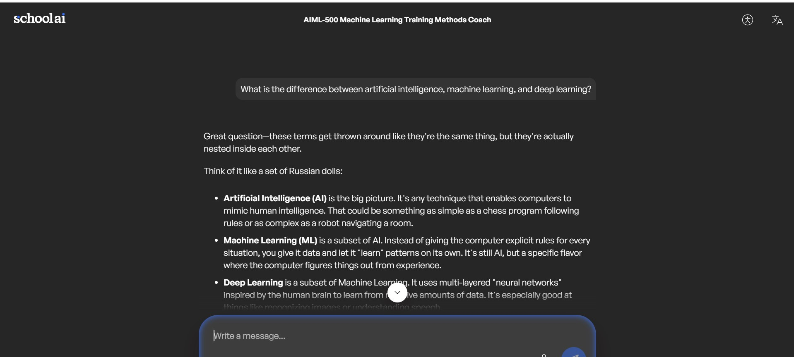

01
Artifact Title
Machine Learning Training Methods Using an AI Coach
Portfolio Artifact 3
This artifact documents an interactive AI-assisted learning activity focused on supervised learning, unsupervised learning, reinforcement learning, algorithms, training data, and the iterative model-training process.
Machine Learning Training Methods Using an AI Coach
This artifact documents an interactive AI-assisted learning activity focused on supervised learning, unsupervised learning, reinforcement learning, algorithms, training data, and the iterative model-training process.
To strengthen understanding of fundamental machine-learning training methods through a guided conversation with a pre-trained AI coach and to connect theory to practical examples.
Learning from labeled examples to predict a known target.
Discovering patterns or groups in data without labeled outcomes.
Learning actions through feedback, rewards, and repeated interaction.
The activity also reinforced the iterative model-training lifecycle: prepare data, select an approach, train, evaluate, improve, and repeat.
The artifact shows active learning rather than passive reading. It demonstrates the ability to use an AI tool as a learning partner while evaluating feedback and refining understanding.
This is relevant to AI/ML practice because effective model development requires knowing how different learning methods work, when they are appropriate, and how training is iteratively evaluated and improved.
Course materials and the pre-trained Machine Learning Training Methods Coach used in the class activity.
The screenshot below documents the Machine Learning Training Methods Coach activity completed in SchoolAI. It provides direct evidence of the AI-assisted discussion used to explore machine learning concepts.
